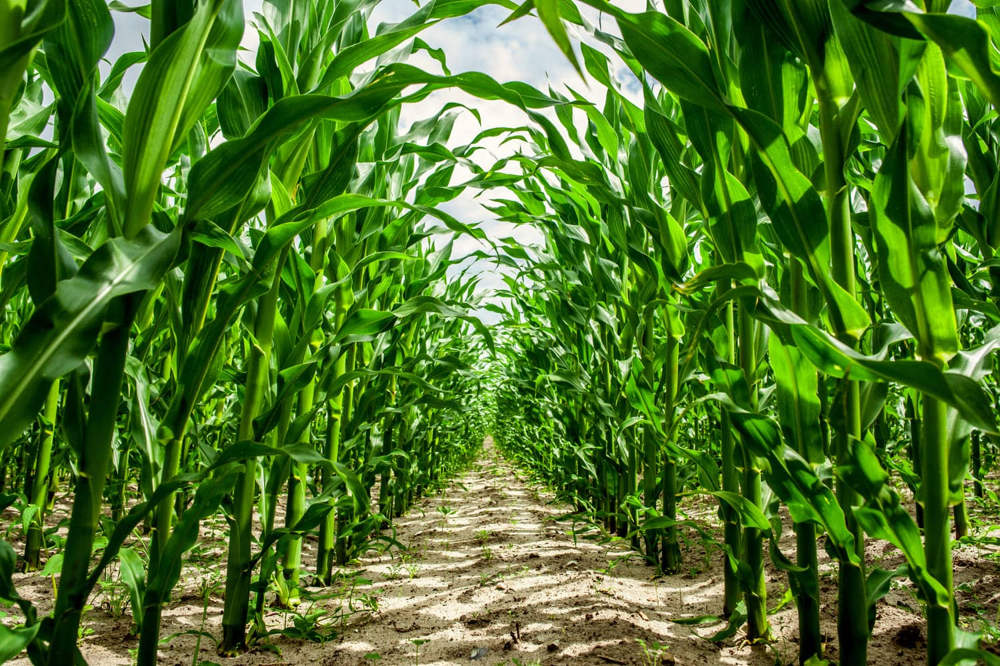
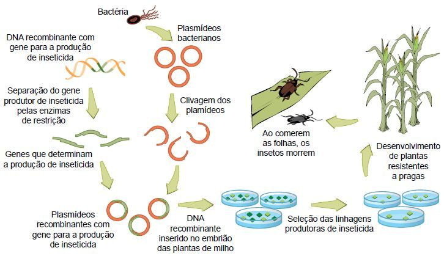

origem do milho
O milho, atualmente, é um dos grãos mais produzidos no mundo! No Brasil, ele atingiu o marco histórico de preço, o que alegrou muitos produtores com a valorização e lucratividade alta.
Apesar de sabermos o quanto o milho foi melhorado ao longo do tempo, muitos se perguntam: qual a sua origem e quando ele começou a ser cultivado?
O milho é a planta comercial originária das Américas mais importante no cenário agrícola. A origem do milho ainda é muito discutida, já que a gramínea pode ter surgido tanto do Paraguai até a Colômbia, quanto da Guatemala até o México.
De acordo com as evidências, é possível que seja originária do México. Isso porque é uma espécie pertencente à família Gramineae/Poaceae, cujo parente mais próximo, acredita-se ser o Teosinto (Zea mays spp. parviglumis), e seu registro restringe-se ao Vale Central de Balsas, no México.Várias hipóteses já foram elaboradas tentando explicar a origem do milho e seu parentesco com o teosinto. Apesar dos relatos, ele se difere de seu ancestral, devido à imposição de pressões de seleção rigorosas pelo homem, a fim de domesticá-lo.
Além disso, geneticamente, estas duas espécies podem ser consideradas parentes pelos seguintes motivos: mesmo número de cromossomos, com homologia e morfologia semelhantes, a polinização é de fácil cruzamento gerando descendentes férteis e apresentam semelhanças entre dados morfológicos e isoenzimáticos.
Por outro lado, alguns pesquisadores defendem a ideia contrária, afirmando existirem poucas evidências sobre a domesticação do mesmo (teosinto), sendo pouco provável que o homem primitivo possa ter criado ou selecionado milho a partir do teosinto.Ainda, outros pesquisadores acreditam que possa ter havido um choque imediato, determinado pelo meio ambiente, que possa ter provocado rápida conversão da espiga central de uma ramificação lateral do teosinto em uma espiga e, que esta fenocópia tenha sido fixada geneticamente, passando, portanto, esta característica a seus descendentes.

descoberta do milho
o descobrimento do milho nas Américas, ele foi levado à Europa, mas era considerado uma cultura exótica em jardins europeus, ou seja, nada muito focado na qualidade de sementes e lavouras.
Seu real valor alimentício foi notado depois, e o império espanhol difundiu seu cultivo pela França, Itália, sudeste da Europa e norte da África.
Os responsáveis pela difusão do milho no restante do continente africano e no Oriente, foram os portugueses, chegando à China em 1516 e ao Japão só em 1775.
Devido aos seus diversos usos, o milho tem grande contribuição no cenário econômico, pois vai desde a alimentação animal até a indústria de alta tecnologia. Cerca de 70% do uso dos grãos de milho do mundo são destinados à alimentação animal, e em algumas regiões ele é o ingrediente básico para alimentação humana.Segundo Mary Poll, em trabalho publicado na revista Pnas, os primeiros registros do cultivo do milho datam de há 7.300 anos, e foram encontrados em pequenas ilhas próximas ao litoral do México, no golfo do México. Seu nome, de origem indígena caribenha, significa “sustento da vida”.E, conforme indicam os registros arqueológicos, o cereal servia como base para a alimentação das civilizações pré-colombianas, entre elas os maias, astecas e incas.

milho trangênico
O avanço do conhecimento científico também permitiu o desenvolvimento das plantas transgênicas e no final da década de 1990, teve início o cultivo do milho transgênico. Tecnologia que proporcionou novos ganhos de produtividade, estabilizando a área necessária para cultivo.O milho transgênico, ou milho geneticamente modificado (GMM), é uma cultura de milho que foi alterada geneticamente para apresentar características desejáveis, como resistência a pragas e herbicidas. No Brasil, a comercialização do milho transgênico foi autorizada em 2007 pela CTNBio, e o plantio começou na safra de 2008/2009.O milho transgênico foi desenvolvido a partir de técnicas de biotecnologia. As sementes transgênicas, são importantes insumos agrícolas que auxiliam os agricultores a enfrentarem os desafios no campo.
O milho é um alimento de reconhecida importância tanto para a criação de animais como para a população mundial. Isso porque, além de ser consumido em sua forma natural (após cozido), também é utilizado como matéria-prima de diversos produtos industrializados. É considerado uma das plantas mais importantes cultivadas no mundo.
Nesse sentido, com o crescimento populacional, a demanda por esse grão tem sido cada vez maior. Razão pela qual, o desenvolvimento de plantas mais produtivas e resistentes a diferentes estresses (bióticos e abióticos) é um dos maiores desafios da ciência na agricultura.